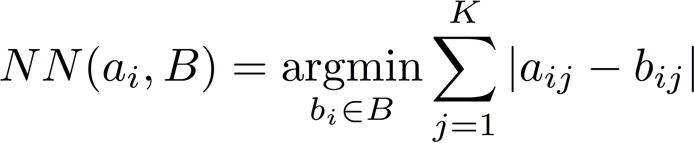

Soundpound
Introduction
Soundpound is a data-driven approach to inferring which sounds should be played by an air-drummer. It was completed as the course project for CSCI 2951-B in Fall 2014. The system takes as input a video of a person playing the air-drums, and returns as output the same video annotated with drum sounds that are intended to reflect which drums the input drummer would have hit. The key observation is that small segments of movement of an air drummer ought to appear similar to those of a real drummer.
The full system has four main steps:
- Apply optical flow to input video, perform pooling on resulting vector field
- Group frames into sequences of frames (referred to as segments henceforth)
- Compute Nearest Neighbor for each of the input video's segments
- Stitch the sound together for each segment.
The full pipeline is visualized as follows:
 Soundpound takes around two times longer two run than the length of the input video (i.e. for a 10 second video, the system will take around 20 seconds). The primary computational bottleneck is running optical flow and pooling. The dataset is all serialized in its featurized form, so it is extremely quick to load and search through.
Soundpound takes around two times longer two run than the length of the input video (i.e. for a 10 second video, the system will take around 20 seconds). The primary computational bottleneck is running optical flow and pooling. The dataset is all serialized in its featurized form, so it is extremely quick to load and search through.
Data Set
The ENST-Drums data set was kindly provided by Olivier Gillet and Gael Richard. The full data set may be requested from them here. It includes approximately an hour of footage of three different drummers playing three different (and extremely varied) drum kits - some of the kits include peculiar percussive instruments such as cowbells, and others are equipped with extra toms and cymbals. The drummers are recorded playing each percussiion instrument with a few different sticks (e.g. mallets, brushes, etc.) from two different camera angles. For experimentation, the full dataset was not used due to the complexity of some of the sequences (i.e. fills, phrases). Here are some example images from the dataset:
Representation
The crux of the representation for each video consists of a vector field that results from applying Optical Flow to each pair of consecutive frames in the video. Optical flow boils down to computing a dense grid of keypoints for each frame and tracking the movement of those keypoints to the next frame. Thus, each frame is represented as a vector field indicating how much each keypoint moved from the previous frame. The implementation that I used was based on the approach introduced by Gunnar Farneback in Image Analysis, 2003. For each frame, I performed a pooling operation across the vector field, reducing the representation for each frame down to a single integer value. Frames were then grouped into segments of N consecutive frames (results reported with N=25). This allows for the representation to capture brief temporal changes in movement, such as downward motion followed immediately by abrupt backward motion. This was critical for achieving good results (with N=1 the Mean Temporal Error was effectively the same as random).
Pooling
The different pooling functions considered were:
- Average magnitude of Optical Flow vectors:

- Max magnitude of Optical Flow vectors

- Sum of the magnitudes of Optical Flow vectors

- Angle of the maximum amplitude optical flow vector:

Where:

- Weighted average of Optical Flow angles. (weighted by magnitude).

Evaluation
This problem is fundamentally difficult to quantitatively evaluate due to the subjective nature of the quality of the output. To evaluate the system, I rephrased the problem in terms of reidentifying the correct sound for an arbitrary video in the dataset, giving me access to ground-truth audio for the input video. This allowed me to treat the Soundpound pipeline like a standard machine learning problem; I broke off a small chunk of the dataset for use as a test set and approximated the correct drumming audio for a given input video and compared it to the ground truth audio.
Unfortunately I was unable to find any existing distance metrics that were standard for audio (or sequences of integers, for that matter). I introduce the Mean Temporal Error metric for determining the distance between two raw audio files:

Here, "a_i" and "b_i" represent subsequences of discretized sound data, and "max()" takes the maximum amplitude sampled sound over the segment. The MTE penalizes cases where the inferred sound segment incorrectly plays a drum sound (the first case), or incorrectly misses a drum sound (the second case). The use of the "max()" operator is intended to compute the maximum magnitude sound in the sound segment a_i, or b_i. The setting of the parameter K is significant, then, as it is sensitive to the volume of the recording. Fortunately for this dataset it was easy to pick a K (50) that achieved the desired cost function, as all videos were recorded on the same camera. Using the MTE, I was able to quantitatively evaluate the performance of my system, visualized in the following steps:

Using the MTE and the above framework, I was able to do some hyperparameter search as well, which improved performance overall. The main parameters of interest include K (used in the MTE), and N, the number of frames per segment. I ended up using N = 25, as the frame rate of the videos is 25fps, making the segments each 1 second long. With a smaller N, the MTE went up, but qualitatively certain characteristics improved (for instance, I was able to play multiple drum sounds back to back, whereas with N=25, only one sound can be played per second). Lastly, I cleaned the data set by identifying neighbors that were selected frequently that resulted in high MTE. These segments all came from hitting a pedal (i.e. there was no movement whatsoever), or drum "phrases" in which the drummer played several drums at the same time. Thus, this preliminary evaluation stage was critical for improving the system.
Finding Neighbors
To find a segment's neighbor, I serialized the entire data set of videos in their featurized format. That is, I computed the Optical Flow of each video in the dataset, performed a pooling operation on the vector field, and grouped the frames into segments. Each segment was then stored in the dataset as its own entity (i.e. a single video was stored as several N-frame sequences). For the input video, the same processing was applied (Optical Flow + Pooling). Then, a simple nearest neighbor search for each segment identified the portions of other videos whose motions corresponded well to the given input segment's motion. The resulting sound is simply the stitched together sound of each matched segment. Since each segment of frames was represented as a single number, the nearest neighbor was identified by finding the segment in the dataset that minimized the distance of each frame to the input segment's frames:

Where "a_i" represents the input segment (and "a_ij" represents a single quanta of sound), and "B" represents the full dataset.
Quantitative Results
I conducted a set of experiments on a small held out set of videos from the ENST-Drums dataset. This round of experiments was intended to determine which pooling function achieved the lowest overall MTE. I compared each of their performance to random behavior to give a sense of the quality of the the representation:

As you can see, average and sum pooling performed the best during these experiments. Going forward, I chose to use average pooling, as it seemd to performed qualitatively better than sum pooling. Additionally, I conducted a set of experiments on a single video with varied dataset sizes. For experimentation, I used 1 minute of data, 5 minutes, 10 minutes, 30 minutes, and the full dataset. Once again, I compared the performance to random performance to give a sense of how much added data improves performance:

As we expect, more data decreases the average MTE during experimentation. This reflects positively on the MTE as a means of comparing sounds. The results page displays the system's qualitative performence in my time experimenting with it. Soundpound commonly makes mistakes still, but in general I found the performance to be good enough to be fun!
Conclusion
The problem of inferring the correct sound is somewhat unconstrained, and is perhaps not well suited to data driven approaches. Still, with the use of the MTE I was able to isolate useful pooling functions and parameters that achieved reasonable qualitative performance. During this project I discovered that there is a noticeable lack of distance metrics for sound and time-series data, something I would be interested in following up with in the future. Much effort has been dedicated to distance metrics in language (i.e. Edit distance and related natural language distances, such as Lewis Carrol's Word Ladder), as one might expect. I suspect there is still work to be done here as the MTE introduced is extremely hand-tailored to this particular problem and dataset. Additionally, there are a few changes to the system that could enhance performance that I did not have time to implement. First, one could inject some expert knowledge into the system, such as a prior on the location of movement for informing which movements map to which drum. Another addition that may improve performance is adding a preliminary segmenting step that identifies the regions of each frame that correspond to a person's movement, and specifically, to their arms. This would remove the occasional noise of one's head or body movement contributing (falsely) to the inferred drumming motion of the video. Lastly, doing a full 3D-mapping of the input drummer's arm could lead to dramatic improvements, though this is admittedly non-trivial with just a monocular camera.